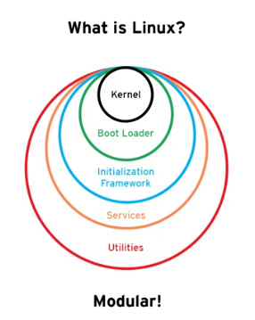
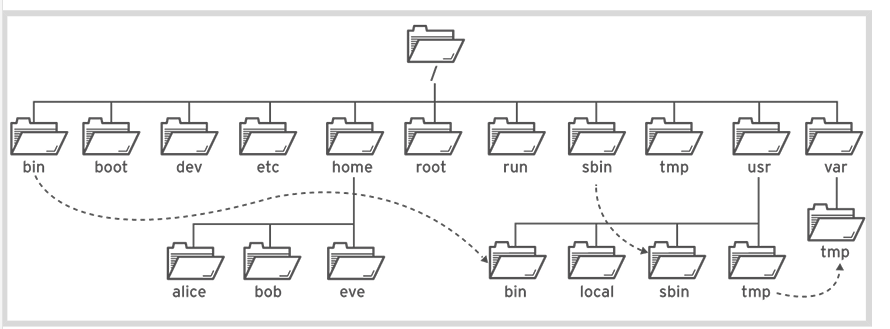
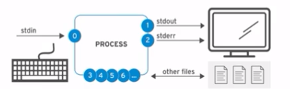
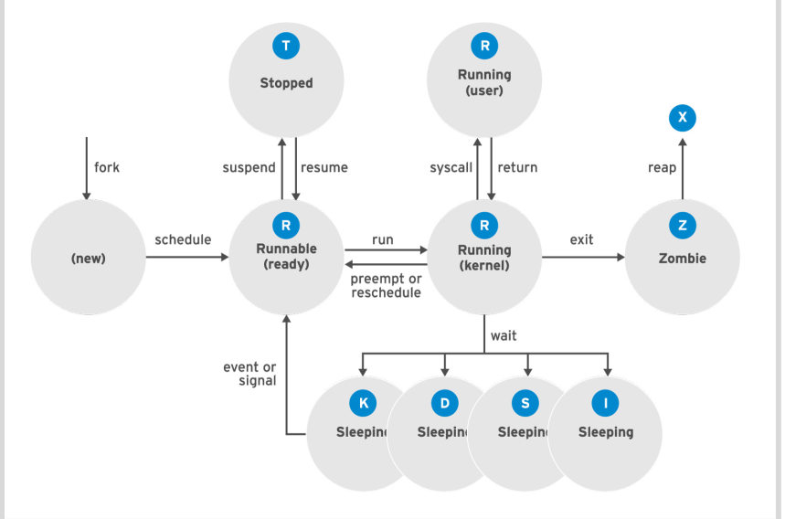
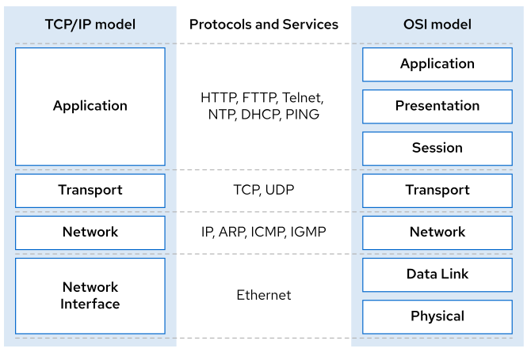
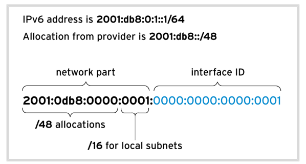
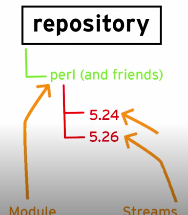

Note 2 R124
2.1 What is linux ?
Modular operations system where you can add components :

Open Source
- Copyleft lic
- GNU : General Public License
- LGNU: Lesser General Public License
- Permissive lic:
- MIT
- Simplified BSD
- Apache Software License
Red Hat contribute and facilitate open source projects, validating the code and support code that Red Hat validate and test.
Sample of Red Hat Products:
* Red Hat Enterprise Linux 8
* Red Hat Open Shift 4
* Red Hat Ansible Automation
* Red Hat Ceph Storage
* Red Hat OpenStack Platform
* Red Hat Virtualization
* Red Hat Gluster StorageBenefits of open source software:
- Code can survive the loss of orginal developer or distributor
- We can learn from real-world code and develop more effective applications
- Red Hat sponsor and integrate open source projects into the Fedora project and participate in upstream projects
2.2 Command Line
2.2.1 $ and #
Attention on shell when you are on command line:
- Root user :
# - Normal user :
$
Sample of using - or --
-all : Shell going to be interpreting all arguments individually
# Shell going to be interpreting all arguments individually a, l and l
ls -all .
--all : Shell will interpreting the entire word
# Shell will interpreting the entire word
ls --all .2.2.2 To login into another computer using ssh
ssh <machine or server>2.2.3 Executing commands
# List the user that you login
whoami
# formatting the dates
date +%F
# Executing one command after the other
date +%A; uname -r; whoami## runner
## 2021-08-27
## Friday
## 19.6.0
## runnerConditional commands execution &&
This is the basic IF statement
The date command must complete successfully than the uname -r command will be running and if execute successfully the whoami command will be executed
## 2021-08-27
## 19.6.0
## runner
##
##
## bash: line 7: ate: command not found
## 19.6.0
## runnercommand history
!!: execute the last command!12: execute the command 12 on history- ctr+r
check type of file
The file command is used to determining the type fo file :
## /etc/issue: cannot open `/etc/issue' (No such file or directory)
##
##
## /bin/bash: Mach-O 64-bit executable x86_64check content of file
catortacheadortailwc -l: count lines of file
2.3 Managing File system

2.3.1 The file system hierarchy /
Try command
tree -d
- / : Top of system file system hierarchy
- /usr : unix system resources, installed software and libraries
- /usr/bin : regular commands and utilities
- /bin : binaries executable that are usable by normal users
- /sbin : system binaries executable typically used by root user
- /boot : component that are necessary to boot file system, like
bootloadercalled grub 2 and linux kernel - /dev : device files, represent hardware components
- /etc : extended text configuration configuration files
- /home : home dir for normal users
- /run : runtime data going to be recreate on a reboot
- /var: variable date that should survive a reboot, log files, database and website files
- /root : root user home dir
- /tmp : accommodate temporary files, deleted by 10 days
- /var/tmp : another temp dir , purge every 30 days
2.3.2 Absolute and Relative paths
- Absolute path, is the complete path, no ambiguity, start with
/:
#sample
cat /etc/issue- Relative path is the path to a file relative the current position, do not start with
/
cd /
cat etc/issue2.3.3 Managing Files
mkdir -p: create the parents that do not exists
## /Users/runner/work/book-notes-linux-learn/book-notes-linux-learn
## dirB
##
## dirA/dirB:
## dirc
##
## dirA/dirB/dirc:Commands
cp -r: copy dirrm -i: show to you msg to confirmrmdir: remove dirrm -r: delete dir recursivemv: movetouch: create files
Links
Index Node ((inode_): How files are identified, keep track of: * permissions * ownership * date & time stamps * paths to data on file system
## 12896309338 -rw-r--r-- 1 runner staff 6556 Aug 27 21:22 LICENSE- 40652348 : file ID (inode)
- 1 : means one name using this iNode right now
Hard Link
## ln: LIC2: File exists
## 12896309337 -rw-r--r-- 1 runner staff 6556 Aug 27 21:22 LIC2
## 12896309338 -rw-r--r-- 1 runner staff 6556 Aug 27 21:22 LICENSE- Both LIC2 and LICENSE have the same iNode but the number right now is 2, not able to identify which one was create first, this is a hard link
Soft Link
## ln: README_2.md: File exists
## 12896309339 -rw-r--r-- 1 runner staff 741 Aug 27 21:22 README.md
## 12896309340 lrwxr-xr-x 1 runner staff 9 Aug 27 21:22 README_2.md -> README.md- Both have different iNode number, so they are two different files, the permission there are a
lmeaning link, this is a soft link, if we delete file 3 we have a broken link
# create tmp files
mkdir -p tmp ;cd tmp ;touch 1file 2file 3file 4file able alfa baker bravo cast easy echo _src
# List files that match this case
echo
echo "List files that match this case Xfile"
ls ?file
echo "----"
# list files that begin with a or c or e
echo
echo "List files that begin with a or c or e "
ls [ace]*
echo "----"
# List files that do not start with a c or e
echo
echo "List files that do not start with a c or e"
ls [^ace]* # or ls [!ace]*
echo "----"
# List all file that begin with an alphabetical character
echo
echo "List all file that begin with an alphabetical character"
ls [[:alpha:]]*
# List all files that begin with digit
echo
echo "List all files that begin with digi"
ls [[:digit:]]*
echo "----"
# List all files that match digit or alphabetical char
echo
echo "List all files that match digit or alphabetical char"
ls [[:alnum:]]*
echo "----"
# List all files that begin with punctuation
echo
echo " List all files that begin with punctuation"
ls [[:punct:]]*
echo "----"
# clean
cd ..
rm -rf tmp##
## List files that match this case Xfile
## 1file
## 2file
## 3file
## 4file
## ----
##
## List files that begin with a or c or e
## able
## alfa
## cast
## easy
## echo
## ----
##
## List files that do not start with a c or e
## 1file
## 2file
## 3file
## 4file
## _src
## baker
## bravo
## ----
##
## List all file that begin with an alphabetical character
## able
## alfa
## baker
## bravo
## cast
## easy
## echo
##
## List all files that begin with digi
## 1file
## 2file
## 3file
## 4file
## ----
##
## List all files that match digit or alphabetical char
## 1file
## 2file
## 3file
## 4file
## able
## alfa
## baker
## bravo
## cast
## easy
## echo
## ----
##
## List all files that begin with punctuation
## _src
## ----Brace expansion
mkdir -p tmp ;cd tmp
echo {Sun,Mon,Tues,Wednes}day.log
# create dirs
mkdir -p RHEL{6,7,8}; ls RHEL*
# create sequence of files using ..
touch song{1..5}.mp3 ; ls *.mp3
#clean
cd ..
rm -rf tmp## Sunday.log Monday.log Tuesday.log Wednesday.log
## RHEL6:
##
## RHEL7:
##
## RHEL8:
## song1.mp3
## song2.mp3
## song3.mp3
## song4.mp3
## song5.mp3Variable
## value
## Today is Friday2.4 Help
All man pages are on /usr/share/man
Commands
manpinfo
## cron(8) - daemon to execute scheduled commands (Vixie Cron)
## crontab(1) - maintain crontab files for individual users (V3)
## crontab(5) - tables for driving cronTo go direct to a section , belo example of command to go direct to session 5
man 5 crontab2.5 Text Files

Channels
- 0 : stdin , read only used by keyboard
- 1 : stdout, write only, terminal
- 2 : stderr, write only, terminal
- 3+ : file name, read and write
We can direct errors to a specific file like below I do not have the file or dir abc
ls abc file1 2> errors.log
# output
file1
# on errors.log
ls: cannot access 'abc': No such file or directory
We also can send both to the same file
ls /show /boot &> combine.log
# another option
# ls /show /boot > combine.log 2>&1
cat combine.log
rm combine.log## ls: /boot: No such file or directory
## ls: /show: No such file or directoryAnother usage when we have an output with lot of errors and can only the the results, all the errors message was sent to /dev/null
find / -iname passwd 2> /dev/null
#output
/usr/share/bash-completion/completions/passwd
/usr/share/doc/passwd
/usr/share/lintian/overrides/passwd
/usr/bin/passwd
/etc/passwd
/etc/pam.d/passwdA good usage is send successfully output to an output.log file and the errors to errors.log file
ls /shoe /boot >> output.log 2>> errors.log
Send emails with content of file, the < will direct the content of file to email to <user>
mail -s "Subject text" <user> < filePipe
The resolv.conf have 6 lines in total but we can see the lines without comment # and direct the output using pipe |
wc -l /etc/resolv.conf
echo
# check the lines without comment
grep ^[^#] /etc/resolv.conf
echo
# combine the grep with pipe
grep ^[^#] /etc/resolv.conf | wc -l## 18 /etc/resolv.conf
##
## nameserver 8.8.8.8
## nameserver 208.67.222.222
## nameserver 8.26.56.26
##
## 3Another way is get the output and save on file using pipe | and tee
find / -iname passwd 2> /dev/null | tee find.out
2.5.1 vim
Modes :
- Insert :
i - Command :
defaultyy: Copyp: paste5p: paste 5 timesdd: deleteZZ: save and quitecw: change wordx: delete characterr: replace charactera: append
- Extend command :
:q!: exit without savewq: save and exit
- Visual :
vcrt + v: block column to manipulate columnshift + v: line mode to select linex: deleteu: undo
2.5.2 Changing shell
- Setting a editor
# To set
env EDITOR=nano crontab -e
# To unset
expor -n EDITOR
The crotab will open on nano editor instead of vi or vim
Also can set the variable EDITOR to nano and the same will hapens if we call crontab é
# using export
export EDITOR=nanoSome .bash* files and adjust
- All the history are saved on
.bash_history .bashrcuser specific env for example:- we can add more lines on history add the variable
export HISTFILESIZE=2000 - add
export HISTTIMEFORMAT="%F %T "
- we can add more lines on history add the variable
2.6 Managing Local Users and Groups
whoami: Show your userid: show your user, groupsType of users*
- Super User root
- Account users, not used by people
- Regular users
2.6.1 Users
/etc/passwd: file with user info
grep bruno /etc/passwd
#output
bruno:x:1000:1000:bruno,,,:/home/bruno:/bin/bashUser : Bruno
x : long time ago where password where stored
1000 : User ID
1000 : group ID
Comment
User home dir : /home/bruno:/bin/bash
The password is stored on
/etc/shadow, only root can access this file- Sample :
6$CSsXcYG1L/4ZfHr/$2W6evvJahUfzfHpc9X.45Jc6H30E...output omitted..- 6 : Hash algorithm used , SHA-512
- CSsXcYG1L/4ZfHr/ Used by cript info
- W6evvJahUfzfHpc9X.45Jc6H30E has password
- Sample :
Another way to list and return user info is using
getentcommand
getent passwd bruno
#output
bruno:x:1000:1000:bruno,,,:/home/bruno:/bin/bashuseradd: create new user, sample :useradd kanouserdel: remove user- sample 1:
userdel kano, but do not remove the data and home dir - sample 2:
userdel -r kano, delete user and data/home dir
- sample 1:
usermod -c: add comments to userusermod -a -G <user>- -a : append to the secondary group membership, if do not use a overwritten the current info
- -G : group name
usermod -g <group> <user>- -g : change the primary group info
usermod -L <user>: Lock a user accountusermod -U <user>: Unlock a user account
2.6.2 Groups
/etc/group: file with group info
grep bruno /etc/group
#output
Show in New Window
/etc/issue: ASCII text
adm:x:4:syslog,bruno
cdrom:x:24:bruno
sudo:x:27:bruno
dip:x:30:bruno
plugdev:x:46:bruno
lpadmin:x:113:bruno
bruno:x:1000:
sambashare:x:130:bruno- bruno : group name
- x : pwd info that is not used
- 1000 : group id
- Members : of group
Show groups from my users using command
groups.
groupadd: add new group (GID > 1000)- -g : specify the GID,
groupadd -g 1000 group1 - -r : create the system group (GID 0-999)
- -g : specify the GID,
groupdel: remove groupgroupdel <group_name>groupmod: modify the group- -n : change the group name,
groupmod -n <new_name> <old_name>
- -n : change the group name,
2.6.3 Gaining superuser access
su: change to root super user, without set the profile, the path still your regular usersu -: change to root user and set the profile and env of rootsudo: allow run commands as another usersudo visudo: sudoers file- Line : if you are member the group wheel you can be logged in from any computer and you can run all cmds as all users
# Allows people in group wheel to run all commands %wheel ALL=(ALL) ALL%indicate a group
sudo -iorsudo su -: assume as root user/etc/sudoers.d/<user>: drop config into that on dir/etc/sudores.das if you are editing the/etc/sudoers
Tip
To create /etc/sudoers.d/admin file and grant all members of admin group total privileges
echo "%admin ALL=(ALL) ALL" >> /etc/sudoers.d/admin2.6.4 Managing user passwords
We no longer store password on /etc/passwd, the password are stored on /etc/shadow
* chage : used to change the aging info for a user password
* Sample : chage -m 1 -M 26 -W 4 -I 3 -E (2019-05-31) <user>
* -m : min wait time before user can change the pwd again, in this case 1 day
* -M : when they have to changed the pwd, in this case in 26 days need to change
* -W : warning of 4 days
* -I : once the pwd expire they have 3 more days to login and change the pwd
* -E : expiration date
chage -l: show all the info/etc/login.defs: Define info of login such PASS_MAX_DAYS, PASSMIN_DAYS, etcAdd user with
nologinshelluseradd -s <user> -s /sbin/nologin
Tip
Change the user and update expiration to more 180 days
chage -E $(date -d + 180days +%Y-%m-%d) <user>2.7 Controlling access to files
drwxrwxrwx
- d : dir, can be l link, etc
- r | 4 : read
- w | 2 : write
- x | 1 : execute
Owning User : first 3 rwx Owning Group : next 3 Other : last 3
Commands
chmod: change the permission modchmod 740 <file or dir>orchmod o+rw <file or dir>
chown: change ownershipchmod user:group <file or dir>chmod :group <file or dir>orchmod user <file or dir>
Tip
Give you read and execute permission do dir but no execute on files inside the dir, i.e, we can list the content but not execute files inside
chmod -R a=rX2.7.1 Default permissions
Sticky bit : In a collaborative dir you can create files on the dir and only delete files that you have created
- Sticky bit — directories o+t
- To set
o+tor1chmod o+t <dir>orchmod 1770 <dir>
- To remove
o-tor0chmod o-t <dir>orchmod 0770 <dir>
- To set
## drwxr-xr-x 3 runner staff 96 Aug 27 21:22 dirAs : Files created on the dir will have the same owning group of dir
- Set grid to dirs or files g+s
- To set
g+schmod g+s <dir>
- To unset
g-schmod g-s <dir>
- To set
## drwxr-sr-x 3 runner staff 96 Aug 27 21:22 dirA- Set uid to files u+s
- To set
u+schmod u+s <file>
- To unset
u-schmod u-s <file>
- To set
2.7.2 umask
umask: show umask infoumask 0000: set the umask to 0000 or 777 to new dirs
To change the user umask we can update the .bashrc file
0022: * The permissions of files going to be 755
2.8 Monitoring and MAnaging Linux process
Process state description

2.8.1 Commands to monitor
top- %CPU
- load average
- tasks
ps aux,ps -ef- PID : process ID
- PPID: Parent process ID
- Time
- CMD
- TTY : from where the process is running
htop
2.8.2 Controlling jobs
sample : gnome-calculator &
Command :
* jobs : list all jobs
* fg %<job_number> : Bring the job to foreground :
* Ctrl+z : suspend/stop the job
* ps j : show the info relate jobs
* bg %<job_number> : restart job
* Ctrl+c : terminate job
2.8.3 Killing process
Signals
## 1) SIGHUP 2) SIGINT 3) SIGQUIT 4) SIGILL
## 5) SIGTRAP 6) SIGABRT 7) SIGEMT 8) SIGFPE
## 9) SIGKILL 10) SIGBUS 11) SIGSEGV 12) SIGSYS
## 13) SIGPIPE 14) SIGALRM 15) SIGTERM 16) SIGURG
## 17) SIGSTOP 18) SIGTSTP 19) SIGCONT 20) SIGCHLD
## 21) SIGTTIN 22) SIGTTOU 23) SIGIO 24) SIGXCPU
## 25) SIGXFSZ 26) SIGVTALRM 27) SIGPROF 28) SIGWINCH
## 29) SIGINFO 30) SIGUSR1 31) SIGUSR2 - default
kill -15 <process> - die right now
kill -9 <process> - stop
kill -19 <process> - continue
kill -18 <process> - kill with -15 several with same name
killall <name> pkill -t pts/2: terminate the user logged on pts/2*
pkill -SIGTERM tail: will kill the tail process runningpstree: display tree view of processpgrep -l -u <user>: identify the process that going to be killed by pkill
2.8.4 Monitor process activity
Load Average
uptimecommand review the load average
## 21:22 up 3 mins, 1 user, load averages: 8.15 5.44 2.41- 1,24 : Last min
- 1,07 : Last 5 min
- 0,93 : Last 15min
To analyze the load average need to know how many CPU’s do we have
lscpu | grep -i 'CPU(s)'
#or
echo
echo "========Number of CPUs=====" :
cat /proc/cpuinfo | grep "model name" | wc -l
#output
CPU(s): 8
On-line CPU(s) list: 0-7
NUMA node0 CPU(s): 0-7
========Number of CPUs===== :
8
So 1,24 / 8 is 0,155 , what means that my CPU is busy 15% of the time on last min
On last 15min my cpu is 11% (0,93/8) last 15min and 13%(1,07/8) last 5min.
To know if the CPU is overload the results show be 1.13 what means that my CPU is overload by 13% on that particular time
Another example
#From lscpu, the system has four logical CPUs, so divide
# load average: 2.92, 4.48, 5.20
#divide by number of logical CPUs: 4 4 4
---- ---- ----
per-CPU load average: 0.73 1.12 1.30
# This system's load average appears to be decreasing.
# With a load average of 2.92 on four CPUs, all CPUs were in use ~73% of the time.
# During the last 5 minutes, the system was overloaded by ~12%.
# During the last 15 minutes, the system was overloaded by ~30%topis another command that can be used to monitor the systemk: ask by the PID to be terminatedM: sort by memoryh: helpshift + w: write the top config on/home/<user>/.config/procps/toprc
- On top :
- PID : process ID
- PR : Priority
- VIRT : Virtual memory that process is using
- RES : Physical RAM used
- SHR : Shared memory
- %CPU
- %MEN
- Time : how long it is running
- Command
2.9 Controlling Services and Daemons
The systemd is responsable for initializing the system and uses units that represent daemons: * service : database, web service, tc * target : collection of units * device * socket
systemctl list-units | head -n 10
# or
# systemctl
# systemctl list-units --type=service
# systemctl list-units --type=target
status
- Status of sshd :
systemctl status sshd
#systemctl list-units --type=service
systemctl status bluetooth.service
#output
● bluetooth.service - Bluetooth service
Loaded: loaded (/lib/systemd/system/bluetooth.service; enabled; vendor preset: enabled)
Active: active (running) since Sun 2021-08-22 08:50:54 -03; 5 days ago
Docs: man:bluetoothd(8)
Main PID: 906 (bluetoothd)
Status: "Running"
Tasks: 1 (limit: 18970)
Memory: 2.7M
CGroup: /system.slice/bluetooth.service
└─906 /usr/lib/bluetooth/bluetooth- Stop :
systemctl stop <service> - Start :
systemctl start <service> - Restart:
systemctl restart <service> - Reload :
systemctl reload <service> - ask :
systemctl is-active <service>or...is-enable...,is-failed - disable:
systemctl disable <service>, the service will not start when the system is started - list dependency :
systemcl list-dependecies <service> - mask :
systemctl mask <service>prevent service to be started - unmask:
systemctl unmask <service>
2.10 Configuring and Securing SSH
On RHEL8 we have OpenSSH which implement not only the SSH daemon but also SSH command line tool
~/.ssh/known_hosts stores the fingerprint sent by server to future communication
To define the StrictHostKeyChecking we can edit the file
~/.ssh/configor/etc/ssh/ssh_config
2.10.1 Configure SSH Key-based Authentication
- private - decrypt
- When you connect to ssh server using private key the remote machine will generate a challenge (encrypted with your public key), if you are able to decrypt that encrypted challenge then yo are allowed to make a connection
- public - encrypt
- when you ssh to a server the public key is saved on the SSH server
2.10.2 Create a public and private keypair
Issue to start and create the Key :
ssh-keygenEnter the file name
Create a paraphrase
Result: We going to have a public and private key created
- Install the key on server
ssh-copy-id -i .ssh/<public key name> <hostname>- Test
ssh -i .ssh/<public key name> <hostname>- Add the private key to agent
# start the agent
eval $(ssh-agent)
# add the key
ssh-add .ssh/<public key name>2.10.3 Customizing OpenSSH Service Config
- Disable the root ability to login on
/etc/ssh/sshd_configto modify the daemon config and change the PermitRootLogin to no
Tecniques to avoid password
- Create a sshusers group and configure
/etc/ssh/sshd_config4 allowGroups, or - Create a private key and public key
2.11 Analysing and Storing Logs
Systemd is the heart of RHEL8 system and need to analyse how it is working
The journal collects messages from several sources (booting, daemons, etc) and we can query using journalctl but this is not persistent by default.
There are another process rsyslog that read syslog and receive systemd-journal and save it on /var/log
Facility is one of the following keywords : auth, authpriv, cron, daemon, kern, lpr, mail, mark, news, security, syslog, user, uucp, local0 to local7.
Priority is one of the following keywords : debug, info, notice, warning, warn, err, error, crit, alert, emerg, panic
/var/log/messages: Store most of syslog messages/var/log/secure: store syslog messages related to security and authentication operationsrsyslog: service that organize syslog messages into/var/log/var/log: directory of syslog files/var/log/maillog: store syslog messages related mail server/var/log/cron: store syslog messages related to the schedule jobs/var/log/boot.log: store console message related to system startupSyslog codes
- 0 - emerg
- 1 - alert
- 2 - crit
- 3 - err
- 4 - warning
- 5 - notice
- 6 - info
- 7 - debug
The message is organized as facility.priority and we can configure to direct it to particular file like authpriv.notice and send to /var/log/foo
Config file :
/etc/rsyslog.conf, where we can add all rules- Avoid edit the main config file
/etc/rsyslog.confand use drop-in directory/etc/rsyslog.d
- Avoid edit the main config file
Log rotate prune framework
/etc/logrotate.conf: Config file/etc/logrotate.d: drop-in dir
Manual messages to syslog sample :
logger -p local7.notice "log entry created on host"
2.11.1 Reviewing System Hournal Entries
Journal is not persistent and can find the logs on /run/log/journal
- systemd-journald - command
journalctljournalctl -r: reverse the log message, last page of msg show firstjournalctl -u <unit>: show logs from unit such as sshd.servicejournalctl -u <unit> --since today: show today message of particular unitjournalctl -u <unit> --since "2019-04-15 09:00:00" --until "2019-04-15 11:00:00" -p warning: Show the warning message of unit in particular timejournalctl --since "2019-04-15 09:00:00" --until "2019-04-15 11:00:00" -p warning: Show ALL warning message in particular time- since request all warning we also going to see the err, crit, alert and emerg messages
journalctl -p err: show the errorsjournalctl -f: to monitor the systemjournalctl -n 50: to show the last 50 messagesjournalctl _SYSTEM_UNIT=sshd.service _PID=xx: will show to you message about this unit and PIDjournalctl -b -1: show the data related one boot if the journal is persistent
2.11.2 Preserving the system journal
By default the journal is not persistent on /run/log/journal and after reboot we lose all data. To preserve the journal we need to create the dir /var/log/journal, also by default journal are not allow to get more than 10% of file system or leave less than 15% of the file system free. The configuration are on /etc/journald.conf
2.11.3 Maitaining Accurate time
Have system in sync is important
Checking time
timedatectl
#output
Local time: Fri 2021-08-27 13:24:50 -03
Universal time: Fri 2021-08-27 16:24:50 UTC
RTC time: Fri 2021-08-27 16:24:50
Time zone: America/Sao_Paulo (-03, -0300)
System clock synchronized: yes
NTP service: n/a
RTC in local TZ: no
To list the timezones we can use the command timedatectl list-timezones and set with command:
timedatectl set-timezone <timezone> The system will use NTP (Network Time Protocol) to synchronize the time with a machine to perform that we can set it to True
timedatectl set-ntp trueRedHat 7 and 8 use the chronyd.service to synchronize the time and inside of /etc/chrony.conf we going to find the list of servers that are in sync and can check the sources with chronyc sources
2.12 Managing Networking
TCP/IP layers :
- Application : How clients communicate across plataforms, sample Web browser talking withWeb server
- SSH : remote login
- HTPS : web
- NFS or CIFS : file share
- SMTP : emal
- Transport : How packets are sent and received like
- TCP : connection-oriented bi-direction form of guaranteed messaging
- UDP : connectionless unidirectional and non-guaranteed messaging
- Internet : Specify how packets are routed acrosss network
- Link layers : physical askpects of networking
- MAC

Devices :
The name dependes on where and how the device is connected
- EN : Ethernet devices
- ENO1 : Onboard Ethernet Interface with index number 1
- ENS3 : Ethernet device in hotplug slot 3
- WLAN : Wireless LAN devices
- WWAN : Wireless AN devices
- WLP4S0 : PCI buss number 4 connect on slot 0
2.12.1 TCPIP
IPV4
- IP
- IP Address : 32bits divided up into 4 octets, this is the interface unique identity on the network
- Subnet mask : divide the IP address into the host portion as well as the network portion and that is used to facilitate routing
- Notation : 255.255.255.0 or /24
IPV6
“New implementation of IP” : Allow every single person to have its own unique IP Address
- IPV6 is 128-bit number with 8 colon separated groups of 4 hexadecimal nibbles, also use subnet mask and normally make use of /64, i.e, 64 bits

Common ipv6 address
- ::1/28 : localhost
- ::/0 : default route
- fe80::/10 : link-local (start with fe80), those link are not routable, when we have IPV6 enable the link-local will be allocated automatically and allow to communicate with other machines using IPV6 on the same local segment
ip a
#output
1: lo: <LOOPBACK,UP,LOWER_UP> mtu 65536 qdisc noqueue state UNKNOWN group default qlen 1000
link/loopback 00:00:00:00:00:00 brd 00:00:00:00:00:00
inet 127.0.0.1/8 scope host lo
valid_lft forever preferred_lft forever
inet6 ::1/128 scope host
valid_lft forever preferred_lft forever
2: enp3s0f1: <NO-CARRIER,BROADCAST,MULTICAST,UP> mtu 1500 qdisc fq_codel state DOWN group default qlen 1000
link/ether 80:fa:5b:4d:16:6d brd ff:ff:ff:ff:ff:ff
3: wlp4s0: <BROADCAST,MULTICAST,UP,LOWER_UP> mtu 1500 qdisc noqueue state UP group default qlen 1000
link/ether f8:94:c2:74:dc:04 brd ff:ff:ff:ff:ff:ff
inet 192.168.15.8/24 brd 192.168.15.255 scope global dynamic noprefixroute wlp4s0
valid_lft 35492sec preferred_lft 35492sec
inet6 fe80::19da:6be7:d851:7ea9/64 scope link noprefixroute
valid_lft forever preferred_lft forever
- The IPV6 : inet6 fe80::19da:6be7:d851:7ea9/64 scope link
- Interface : enp3s0f1
- MAC : link/ether 80:fa:5b:4d:16:6d brd ff:ff:ff:ff:ff:ff
- IPV4 : inet 192.168.15.8/24 brd 192.168.15.255 scope global dynamic
Commands
* PING tool for IPV6 : ping6 <ipv6>%<interface>
* Show IPv4 table : ip route
* Show IPv6 table : ip -6 route
* Show specific interface : ip a s <interface
* Properties of interface : ip link show
* Link statistics : ip -s link show
Files
- /etc/hosts : There are number of names that resolve ip address
- /etc/services : List of commonly used services
- /etc/resolv.conf : Wejre DNS service are defined
2.12.2 Validating Network Configuration
Commands to review IP config
ip a
Tools
- ip : to list ip config
- netstat : check ports and process
- tracepath : work similar traceourte
tracepath access.redhat.com - ss : information about process that are opening up listening
- sample :
ss -plunt - sample2 :
ss -lt: What is listening,tfor TCP
- sample :
2.12.3 Configure Networking from the Command Line
Tool: nmcli an interface to the Network Manager daemon that supoprt tab complition
Config on :
/etc/sysconfig/network-scriptsHigh level of how network is configured :
nmcli
#output
Show in New Window
/etc/issue: ASCII text
/bin/bash: ELF 64-bit LSB shared object, x86-64, version 1 (SYSV), dynamically linked, interpreter /lib64/ld-linux-x86-64.so.2, BuildID[sha1]=a6cb40078351e05121d46daa768e271846d5cc54, for GNU/Linux 3.2.0, stripped
Show in New Window
40652348 -rw-rw-r-- 2 bruno bruno 6556 Aug 12 21:50 LICENSE
Show in New Window
wlp4s0: connected to Auto ALMAX-BRUNO
"Intel Wireless-AC 3168NGW"
wifi (iwlwifi), F8:94:C2:74:DC:04, hw, mtu 1500
ip4 default, ip6 default
inet4 192.168.15.8/24
route4 0.0.0.0/0
route4 169.254.0.0/16
route4 192.168.15.0/24
inet6 fe80::19da:6be7:d851:7ea9/64
route6 fe80::/64
route6 ::/0
p2p-dev-wlp4s0: disconnected
"p2p-dev-wlp4s0"
wifi-p2p, hw
enp3s0f1: unavailable
"Realtek RTL8111/8168/8411"
ethernet (r8169), 80:FA:5B:4D:16:6D, hw, mtu 1500
lo: unmanaged
"lo"
loopback (unknown), 00:00:00:00:00:00, sw, mtu 65536
DNS configuration:
servers: 192.168.15.1
interface: wlp4s0
servers: fe80::aec6:62ff:fefc:7110
interface: wlp4s0
Use "nmcli device show" to get complete information about known devices and
"nmcli connection show" to get an overview on active connection profiles.
Consult nmcli(1) and nmcli-examples(7) manual pages for complete usage details.- Connection show :
nmcli connection show
#output
NAME UUID TYPE DEVICE
Auto ALMAX-BRUNO 72e81729-a7a7-473b-8577-013339a4420b wifi wlp4s0
Wired connection 1 44945eb1-1b88-305b-84c0-c0c13d340a0a ethernet -- Details about connections :
nmcli connection show "Auto ALMAX-BRUNO"Sample of modify profile ipv4.dns
# modify the dns
ncli con mod <connection name> ipv4.dns <New DNS Name>
# or append, in this case we will have two values of dns
ncli con mod <connection name> +ipv4.dns <New DNS Name>
# grep
nmcli con show <name> | grep dns
# reinitialize the profile
ncli con up <connection name>
# check /etc/resolv.conf
cat /etc/resolv.conf- Status:
nmcli dev status
#output
DEVICE TYPE STATE CONNECTION
wlp4s0 wifi connected Auto ALMAX-BRUNO
p2p-dev-wlp4s0 wifi-p2p disconnected --
enp3s0f1 ethernet unavailable --
lo loopback unmanaged -- - Add conn
sample
nmcli con add con-name <name of connection> type ethernet ifname <name of connection>- Up and Disconnect
# Activate connection interface
nmcli con up <connection_name>
# disconect interface
nmcli dev dis <device>- Delete , reload and modify
# Delete
nmcli con del <device>
# reload
nmcli con reload
# modify
nmcli con mod <name>- List
# show NetworkManager of all Net Interface
nmcli dev status
# show connections
nmcli con show
# show config
nmcli con show <name>
2.12.4 Editing Network Configuration Files
Files :
We can modify the config file and perform reload nmcli con reload and nmcli con up <name> or use the nmcli commands
- Every Device have a config file into
/etc/sysconfig/network-scripts/ifcfg-*, where there are the hardware address, ipaddr, gateway, domain, etc
Sample after update ifcf-* file
nmcli con reload
mcli con down "static-ens3"
nmcli con up "static-ens3"2.12.5 Configuring Hot Names and Name Resolution
Command
hostnamehostnamectlhostnamectl status
hostnamectl status
#output
Static hostname: turing
Icon name: computer-laptop
Chassis: laptop
Machine ID: bbada5cfcc9a4a80ac8dc5ce6d9f53aa
Boot ID: cf3c63ed65874b238e2f825055abbf1f
Operating System: Linux Mint 20.2
Kernel: Linux 5.4.0-81-generic
Architecture: x86-64- To update hostname
hostnamectl set-hostname <new_name>
# check
cat /etc/hostnameName resolution are om /etc/hosts , the order of resolution are on /etc/nsswitch.conf
- Adding additional DNS search and IP Address for IPv4 similar we can perform for IPv6
sample
# add
nmcli con mod <connection name> +ipv4.dns <IP> +ipv4.dns-search <name>
# up the connection
nmcli con up <connection name>
# check
cat /etc/resolv.conf2.13 Archiving and transferring files
2.13.1 TAR
- Create tar file
tar -cf etc.tar /etc- Test
tar -tf etc.tar- Extract
tar -xf etc.tar
# Extract one file
tar -xf etc.tar etc/hostscompression and tar
- Create tar file and compress with gzip2
tar -czf etc-backup-$(date +%F).tar.gz /etc- Create a tar file and compress with bzip2
tar -cjf etc-backup-$(date +%F).tar.bz /etc- Create a tar file and compress with Xzip
tar -cJf etc-backup-$(date +%F).tar.xz /etc
2.13.2 SCP
Securely transfer files between systems
- Copy dir and files from another system
copy xf dir from servera to current dir ‘.’
scp -r user@servera:/xf . - Copy without password
# create keygen
ssh-keygen -N ''
# copy id
ssh-copy-id servera
# run scp command
scp -r user@servera:/xf . 2.13.3 SFTP
# connect
sftp user@servera
# list
sftp> ls
# create dir
mkdir backup
cd backup
# local change dir
sftp> lcd /etc
# upload hosts file
sftp> put hosts
2.13.4 Synchronizing Files Between System
- Transfer using
rsync
rsync -Par servera:/xf . If we update the data into servera on xf dir next time we perform rsync it will perform incremental receiving and download only the difference
2.14 Intalling and updating software packages
To have the Red Hat software update and donwload the bins from RedHat vendor we need a subscription, there are 4 basics elements :
- You have to register the server with Red Hat or in fact a satellite server
- After that need to subscribe the server to entitle it to update
- Enable repositories
- Go to lifecycle manamgent to track and manage entitlements via portal or subscription asset manager tool
Commands
- Status :
subscription-manager status - Register :
subscription-manager register - Attach to subscription :
subscription-manager attach --auto - Enable repos :
subscription-manager repos --disable='*'--enable='repos_name'
2.14.1 Package manager
rpm: Red Hat Package Manager is a popular format for installing software
rpm database : keep track of what software is installed and versions
- Query the rpm database to list all packages installed
rpm -qa- Query a particular package
rpm -q <package>
#or
rpm -qi <package>- List files associate with packages
rpm -ql <package>- Show the config files
rpm -qc <package>- Show de documentation
rpm -qd <package>- Show the script that going to be executed
rpm -q -p --scripts <package>.rpm- Install
Limitations : Cannot manage dependency
rpm -i <package>- Which package provide a particular file
rpm -qf <file>- Download using yumdownloader
yumdownloader <package>- Query on rpm file, listing a list of files provided by this package
rpm -qpl <file>.rpm- Query the config files into the rpm file
rpm -qpc file.rpm- Extract all the files and dirs that are inside a RPM file using rpm2cio
rpm2cpio <file>.rpm | cpio -duim2.14.2 Inslalling and Update Software Packages with Yum
- Search or get info on current repos
yum search <pacakge>
yum info <pacakge>- Query RPM files without have to download using repoquery
repoquery -l <package>- Find out what package provide a particular file
yum provides <file like /etc/fstab>
yum profides *bin/authconfig- Install yum resolve all dependencies
sudo yum install <package>
#or
sudo yum localinstall <package>.rpm- Update
sudo yum update <package>- Remove
Tip : do not use
-yto review what going to be removed
sudo yum remove <package>- Check groups
yum group list- Check packages associate with a group for example Development Tools group
yum group info "Development Tool"- Install in a particular group
yum group install "Development Tool- Log can be checked on /var/log/dnf.rpm.log and we can see the history
yum history- We can undo a transaction on history
sudo yum history undo <number_of_line>2.14.3 Enabling Yum Software Repositories
- List the repositories that we are connected and repo definition path are on /etc/yum.repos.d/
yum repolist all- Enable and disable repos using yum-config-manager
yum-config-manager --disable <repo_name>
yum-config-manager --enable <repo_name>- List subscription manager repos list
subscription-manager-repos --list2.14.4 Managing Packages Module Streams
Module is a set of RPM packages

- List modules and get info
yum module list <package/module like perl>
yum module info <package/module like perl>
# List installed modules
yum module list --installed- Install module stream
yum module install <package/module like perl>- Remove stream
yum module remove <package/module like perl>- Disable stream
yum module disable perl2.15 Accessing Linux File Systems
df -h: overview of various file systemsblkid /dev/vda1: show the UUID (universally-unique identifier) of file systemfindmnt: tree overview of file system starting at rootslsblk: show overview of the various block devices like /dev/vda or /dev/sdalsblk -fp /dev/vdbcheck the UUID
lsblk
#Output
NAME MAJ:MIN RM SIZE RO TYPE MOUNTPOINT
sda 8:0 0 931,5G 0 disk
├─sda1 8:1 0 512M 0 part /boot/efi
├─sda2 8:2 0 915,1G 0 part /run/timeshift/backup
└─sda3 8:3 0 15,9G 0 part [SWAP]- Check the entire disk
$ls -l /dev/sda
brw-rw---- 1 root disk 8, 0 Aug 22 08:50 /dev/sda
[SWAP]b : Indicate that this is a block based device
du -sh: check space that has being occupied by a directory- s : summary
- h : human read format
$du -sh /var/log
1,3G /var/log
2.15.1 Mount and Unmounting File systems
To Mount
Check the UUID of block device using
blkid /dev/vb1for instanceCreate directory :
mkdir -p <path>Mount :
mount UUID="XXX" /<path>Check the return code
echo $?(0 means successfully)Check with
df -hormountcommand
To Unmounting
umount </dev/vdb1>
2.15.2 Locating Files on the System
find
Basic find syntax :
find <where> <how> <what is lokking for>
Some examples :
find / -name ssh_config: looking for particular namefind / -iname ssh_config: using i going to use case insensitive searchfind /usr -iname "*.pdf": looking all files that end with pdffind / -user <user_name>: find files for a particular userfind / -user <user_name> -delete: find and deletefind / -type f -user rick -size 10M: find files from user rick with 10MB (+10M more than 10MB , -10M less than 10MB)find /home -size +10M -exec ls -lh {} \;: find on home files more than 10MB and list with ls -lhfind /home -size +10M iname "*.mkv" -exec rm -f {} \;: find files on home with more than 10MB ending with .mkv and execute rm -f on each file, similar find /home -size +10M iname "*.mkv" -delete`find /home -type f -perm /111: find files on home that have execute permission (111)find /home -min -60: find files modified in last 60min
locate
pre-req : run the command updatedb to create an index of the files on file system
locate <file>: basic locate a file
2.16 Analysing Server and Getting Support
cockpit service used to analysing and managing remote servers, this is a web user interface that use TCP 9090
- Enable :
systemctl enable --now cokpit.socket - Reload firewall daemon and set permanent :
firewall-cm --add-service cockpit --permanentandfirewall-cmd --reload - link : https://
:9090/system
2.16.1 Deteting and Resolving issues with Red Hat Insights
It is a form of AI which is available as a software as a service
Install Insights
- Register and attach the server on subscription-manager
sudo subscription-manager register --auto-attach- Install client Insights and register
sudo yum install -y insights-client
sudo insights-client --register
- Go to insights dashboard cloud.readhat.com/insight